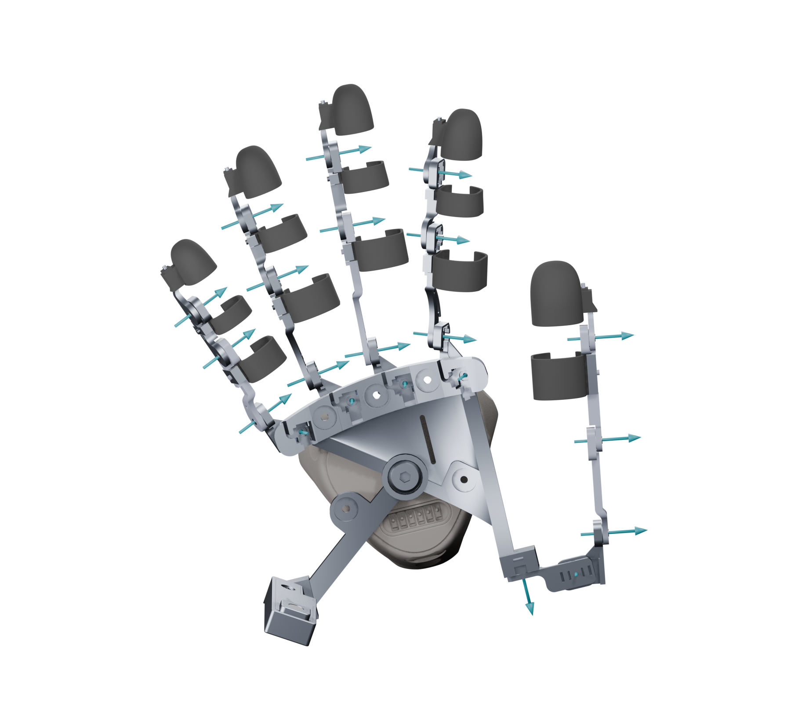
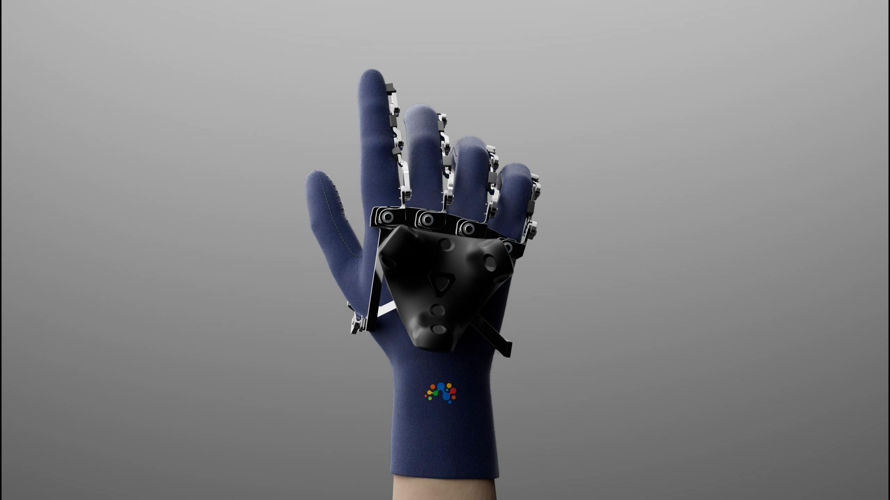
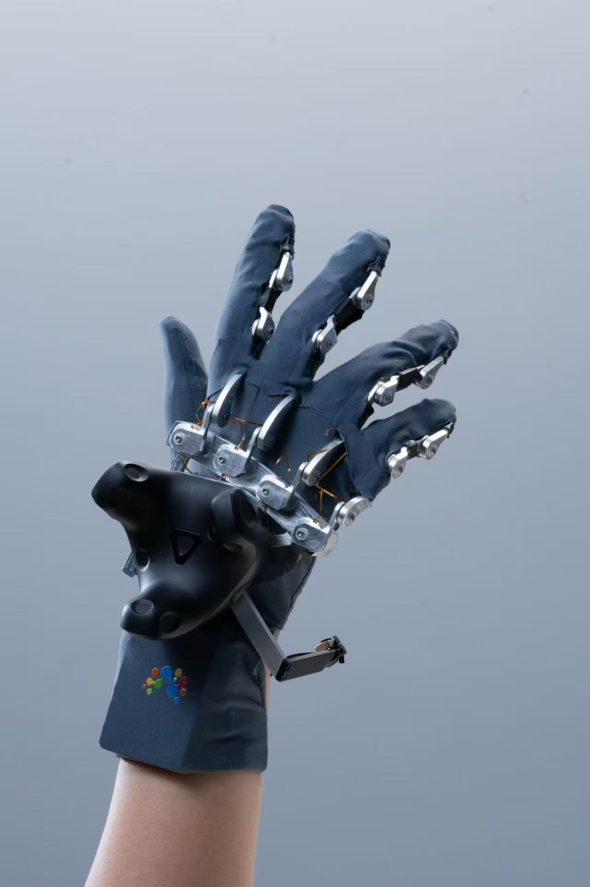
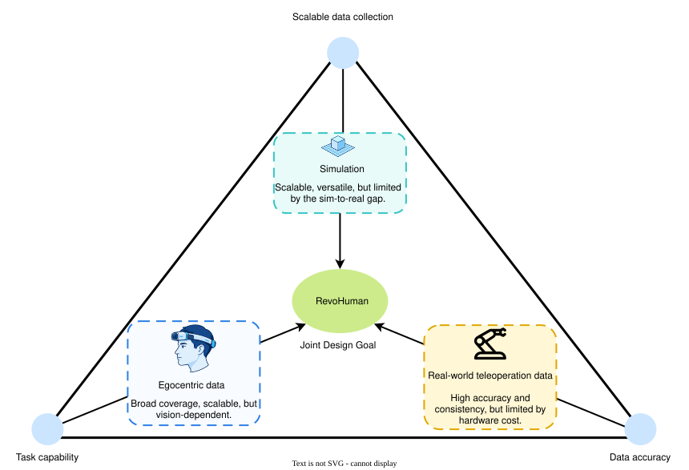

RevoHuman: High-Fidelity Human Demonstration Capture for Contact-Grounded Dexterous Manipulation
Loading 3D model...

Abstract
Contact-rich dexterous manipulation requires continuous hand configuration, wrist motion, and contact state, which a single egocentric video cannot recover reliably. Existing approaches generally struggle to satisfy task capability, data fidelity, and collection efficiency at scale simultaneously. We present RevoHuman, which records human demonstrations directly with 21-DoF side-mounted exoskeleton magnetic encoders on both hands, full-palm thin-film piezoresistive tactile sensing, head-mounted stereo cameras, wrist-mounted cameras, and optical tracking sensors, and generates trajectories through unified calibration, real-time acquisition, and time synchronization. Human demonstrations preserve task capability, while the input of multiple data modalities provides rich information and describes the manipulation task and scene more completely. The integrated deployment and donning procedure frees the data-collection operator from a fixed workstation and improves collection efficiency at scale. We additionally provide a layered evaluation methodology covering sensor accuracy, end-to-end fidelity of collected data, and comparisons of task-capability range and collection efficiency across collection methods.
Demonstration videos
Bimanual demonstrations across six manipulation tasks, with synchronized split-screen recordings.
Data-collection sessions
6 clipsSignals & replay
4 clipsOne system, three goals at once
Existing pipelines trade task capability, data fidelity, and collection efficiency off against each other. RevoHuman is designed so that all three hold within the same collection process.
Task capability
Tasks are performed by a human operator, not bounded by a target robot's capability ceiling or a teleoperation interface. The side-mounted exoskeleton frees the palm and fingertips, preserving natural bimanual dexterity.
Data fidelity
Joint angles, wrist poses, and contact state are measured directly by dedicated sensors — never estimated secondarily from RGB — and aligned onto one spatio-temporal timeline.
Collection efficiency at scale
A portable wireless pipeline with rapid donning, unified calibration, automatic packaging, and quality inspection — no robot body or fixed teleoperation workstation occupied.
Inside RevoHuman
A wearable multimodal system for human bimanual manipulation: bilateral exoskeleton tactile gloves, head-mounted stereo RGB, monocular RGB at both wrists, spatial trackers for the head and both hands, and a unified acquisition unit.
| Module | Configuration | Direct observation | Parameters |
|---|---|---|---|
| Exoskeleton + magnetic encoders | one set per hand | 21-DoF joint angles per hand | 200 Hz · 180×145×35 mm per hand |
| Thin-film piezoresistive tactile | phalanges & palm, both hands | normal contact response | 0.5 mm thick · 200 Hz |
| Wrist-mounted camera | one per wrist | near-field monocular RGB facing the palm | 1080p @ 30 fps · 124° FoV |
| Head-mounted stereo camera | one set | human-centered environment RGB | 1080p · 190° FoV |
| Spatial localization trackers | head + back of each hand | 6-DoF pose of head and both wrists | rigidly attached to wearable structure |
| Acquisition & output unit | one set | synchronization, power, transmission | sampling-sync error < 1 ms · 5 V · 4 h battery · Ethernet / Wi-Fi |
Linkages and sensing units sit on the sides of the fingers, freeing the primary contact areas of palm and fingertips. A fully rigid internal chain gives adjacent bodies determinate geometric constraints — a calibratable basis for per-phalanx pose reconstruction.
Small magnetic encoders seat stably against each joint's rotational axis and directly acquire all 21 joint angles per hand at 200 Hz, feeding the exoskeleton forward kinematics.
Tuned gel hardness at the phalanges and palm balances compliance against contact deformation, reconciling manipulation dexterity, task success rate, and contact-data stability.
Piezoresistive film covers the phalanges and palm surface, acquiring normal contact response at 200 Hz. At 0.5 mm thick it leaves grasping space and the wearer's own tactile feedback essentially intact.
Head-mounted stereo records the task environment at 190° FoV; two wrist cameras rigidly mounted on the exoskeletons face the palm at 124° FoV, supplementing contact regions and occluded near-field detail.
Head and hand trackers live in one shared world frame; a lightweight PTP mechanism aligns the tactile/encoder sampling timestamps of both hands to a common IPC clock with sub-millisecond error.


From human motion to aligned demonstrations
One calibration and synchronization chain turns bimanual human operation into spatio-temporally aligned visual, kinematic, and tactile trajectories.
cameras: head + wrists
trackers: 6-DoF poses
Two timestamp types are distinguished on a common timeline: tactile and joint encoders record the physical sampling instant, while trackers and cameras are aligned by arrival time. Every sample stores its timestamp source, interpolation span, and quality mask. Post-processing runs coordinate transformation, modality association, anomaly detection, and standardized packaging, flagging encoder out-of-range, tactile saturation, tracker loss, frame drops, and out-of-tolerance timing residuals.
A complementary data stack
Four categories of embodied data form a complementary stack. Simulation and purely egocentric video scale easily and mainly serve pre-training; same-robot teleoperation data is embodiment-consistent but hard to scale. RevoHuman sits between the two as a high-fidelity human grounding layer.


Layered evaluation
From components to the whole system: sensor accuracy first, then end-to-end collection fidelity, then task-capability range and collection efficiency at scale. Each layer has its own threshold — no weighted average can hide a weak dimension.
Sensor performance
Encoder accuracy and magnetic robustness against an independent angular reference; tracker localization accuracy against a high-precision pose reference; tactile accuracy, hysteresis, drift, and repeatability under graded standard loads.
Collection fidelity
Rigid-body coupling accuracy of the reconstructed hand against external markers across joints, speeds, donnings, and operators; kinematic replay in a digital hand model and full interaction replay in simulation.
Task range & throughput
A unified suite of 200 manipulation tasks, compared against purely egocentric collection and real-robot teleoperation in a randomized crossover design, counting donning, calibration, resets, and retries toward total time.
Citation
@article{revohuman2026,
title = {RevoHuman: High-Fidelity Human Demonstration Capture for
Contact-Grounded Dexterous Manipulation},
author = {Author One and Author Two and Author Three}, % TODO: real author list
year = {2026},
journal = {arXiv preprint}
}